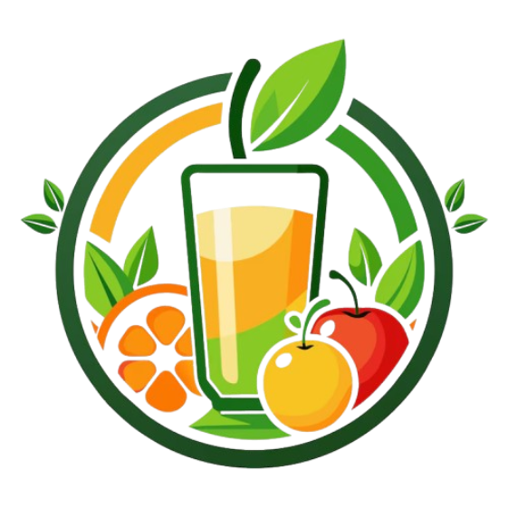

1. Elegimos ingredientes
Seleccionamos frutas y otros ingredientes frescos para preparar bebidas con sabores variados y naturales.

Jugos naturales para una vida saludable
Sabor natural, energía real
En Green Life preparamos jugos naturales con frutas frescas, sabores variados y precios accesibles, cuidando cada detalle para ofrecerte una opción deliciosa y amigable con el planeta.
Descubre nuestros sabores
Conoce Green Life
Creamos una forma sencilla de disfrutar bebidas naturales, accesibles y responsables con el medio ambiente.
Seleccionamos frutas y otros ingredientes frescos para preparar bebidas con sabores variados y naturales.
Combinamos los ingredientes según cada receta para crear jugos frescos que puedas disfrutar en cualquier momento.
Buscamos mantener precios razonables para que una bebida saludable pueda estar al alcance de más personas.
Reducimos el uso de materiales innecesarios y promovemos alternativas de consumo más responsables con el ambiente.
Descubre nuestra variedad
Desde combinaciones refrescantes hasta mezclas llenas de color, tenemos una opción para cada gusto. Y si quieres experimentar, también puedes crear tu propia combinación.

Espinaca, manzana verde, limón y un toque de jengibre.
S/ 7.50
Fresas, frutos rojos y un toque de naranja para refrescarte.
S/ 8.00
Mango, naranja y maracuyá para una mezcla tropical y dulce.
S/ 8.50
Piña, naranja y maracuyá con un sabor tropical intenso.
S/ 8.00
Naranja, zanahoria y limón para una bebida cítrica y fresca.
S/ 7.00
Maracuyá, mango y piña para los amantes de los sabores intensos.
S/ 8.50
Fresa, frambuesa y manzana para una combinación dulce y ligera.
S/ 8.00
Plátano, fresa y leche para una bebida cremosa y suave.
S/ 7.50Elige tus frutas favoritas y crea una mezcla completamente a tu gusto.
Crear mi combinaciónUna elección diferente
No se trata solo de preparar un buen jugo. Queremos que cada bebida combine sabor, accesibilidad y una forma de consumo más responsable.
Seleccionamos frutas e ingredientes pensando en ofrecer bebidas frescas y llenas de sabor.
 🍓
🌿
🍓
🌿
Queremos que disfrutar de una bebida natural sea una opción posible para diferentes personas y presupuestos.
Ofrecemos combinaciones frutales, cítricas y verdes para que siempre puedas encontrar algo que te guste.
Buscamos reducir residuos y utilizar alternativas que disminuyan nuestro impacto en el medio ambiente.
Green Life busca hacer que lo saludable también sea práctico, variado y accesible.
Nuestro compromiso
En Green Life creemos que disfrutar de bebidas naturales también puede ir de la mano con cuidar nuestro entorno. Por eso buscamos reducir nuestro impacto en cada parte del proceso.
Reducimos el uso de materiales innecesarios y promovemos envases más responsables.
Buscamos aprovechar mejor las frutas e ingredientes para disminuir el desperdicio de alimentos.
Preferimos opciones que permitan disminuir progresivamente nuestro impacto ambiental.
Invitamos a nuestros clientes a elegir y desechar sus productos de una manera más responsable.

Pequeños cambios, grandes impactos.
Visítanos
Estamos creciendo para estar cada vez más cerca de ti. Conoce nuestras principales sucursales y encuentra la más cercana para disfrutar de Green Life.
Av. Larco 458, Miraflores
Lunes a sábado · 8:00 a. m. - 8:00 p. m.Av. San Luis 1250, San Borja
Lunes a sábado · 8:00 a. m. - 8:00 p. m.Av. Grau 715, Barranco
Lunes a domingo · 9:00 a. m. - 9:00 p. m.Lugares pensados para disfrutar de una bebida fresca, natural y preparada al momento.


Elige tu sucursal favorita y ven a descubrir tu próximo sabor.